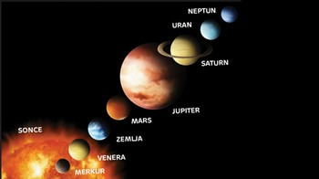

Naše osončje ima po tej definiciji 8 planetov (po vrstnem redu oddaljenosti od Sonca):
 Prve štiri Jupitrove naravne satellite je opazil 7. in 8. januarja leta 1619 Galileo Galilei.
Ti naravni sateliti danes tvorijo skupino Galilejevih satelitov in so daleč največja telesa okrog Jupitra,
saj preostalih 59 naravnih satelitov predstavlja le 0,003% skupne krožeče mase. Največje štiri Jupitrove lune so:
Prve štiri Jupitrove naravne satellite je opazil 7. in 8. januarja leta 1619 Galileo Galilei.
Ti naravni sateliti danes tvorijo skupino Galilejevih satelitov in so daleč največja telesa okrog Jupitra,
saj preostalih 59 naravnih satelitov predstavlja le 0,003% skupne krožeče mase. Največje štiri Jupitrove lune so: